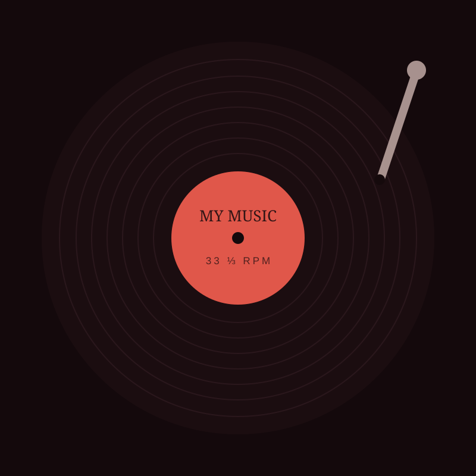

Singers
Five voices I keep coming back to, each with a short note about the sound and the tracks that matter.
Read the five profilesFive singers, twenty tracks, one playlist that has been in the same order for two years. This site is a small archive of it: who they are, what they sound like, and which song I play first when the day starts badly.

Two lists and one rule: if a song survives a whole year of listening, it earns a row.
Five voices I keep coming back to, each with a short note about the sound and the tracks that matter.
Read the five profilesTwenty tracks, in the order I actually listen: from a slow opener to the one that ends too early.
See all twentyHeadphones on the tram, a speaker in the kitchen, and a rule against skipping the first thirty seconds.
Recommend a songWhere the twenty tracks sit, genre by genre.
| Genre | Singers | Tracks | First one to try |
|---|---|---|---|
| R&B · indie pop | Gareth.T | 5 | Waves |
| Hip-hop · rap | Top Barry | 4 | DD Backseat |
| Mandopop | Stefanie Sun | 3 | Rainy Day |
| Chinese pop and rock | Lu Guangzhong, Joker Xue, Guo Yifan, Clara La San | 6 | Name Engraved in My Heart |
| Alternative pop · lo-fi | keshi, Cassanova | 2 | WANTCHU |
| Total | 5 main singers | 20 tracks | — |
Every figure here is counted from the playlist page, so the numbers cannot drift apart.
A three-page personal collection, written by hand in HTML and CSS for the course Introduction to Digital Services (DIG001IT1AE-3033). No JavaScript, no framework, no template — the covers are drawn as SVG so the whole site stays around 60 kB.